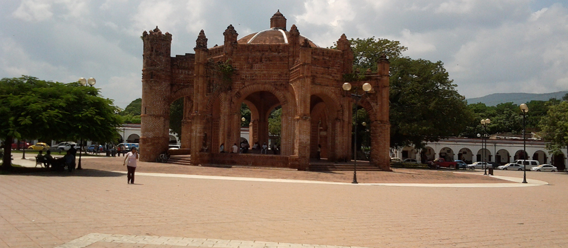

Plaza de Armas Ángel Albino Corzo Castillejos, en honor al ilustre liberar oriundo de esta Ciudad. Consta de 17,000 metros cuadrados, rodeados de los Portales. Recién remodelada en el año 2005. En ella se encuentra la Fuente Colonial Mudéjar, también conocida como “la Pila”, estructura de enorme relevancia arquitectónica por ser única en Iberoamérica. El estilo mudéjar nació en la España del siglo XII, donde tuvo su principal desarrollo. Con la reconquista leonesa, castellana y aragonesa de territorios con población musulmana, se inició una combinación del estilo artístico musulmán con el románico y, posteriormente, con el gótico y el renacentista. A pesar de la división que existió durante varios siglos en España entre el cristianismo y el islamismo, se pueden encontrar numerosas y bellísimas muestras de construcciones y de arte que combinan ambos estilos, creando así, uno propio: el mudéjar, predominante en la España medieval. En esta misma plaza se encuentra la antigua Pochota (árbol milenario símbolo de respeto, tradición y leyenda para los Chiapacorseños) y “Los Portales”, una serie de arcos construidos en el siglo XVIII y en los cuales se albergan varias fondas y comercios de artesanías.
Calle 5 de febrero y av. Julián Grajales, Chiapa de Corzo, Chiapas.
De Tuxtla Gutiérrez, tomar la carretera panamericana No. 190 hacia Chiapa de Corzo, una vez arribando a dicha ciudad, incorporarse a la carretera Victórico Grajales, hasta llegar a la Plaza Central.
Este lugar es apto para la fotografía y la investigación. También puedes disfrutar de eventos culturales que se realizan en fechas programadas, además de disfrutar de su arquitectura colonial.

posicione el mouse sobre las imágenes